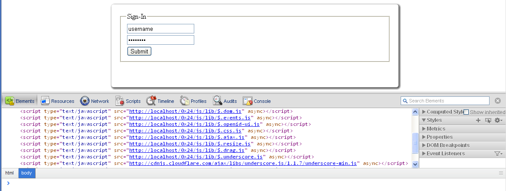
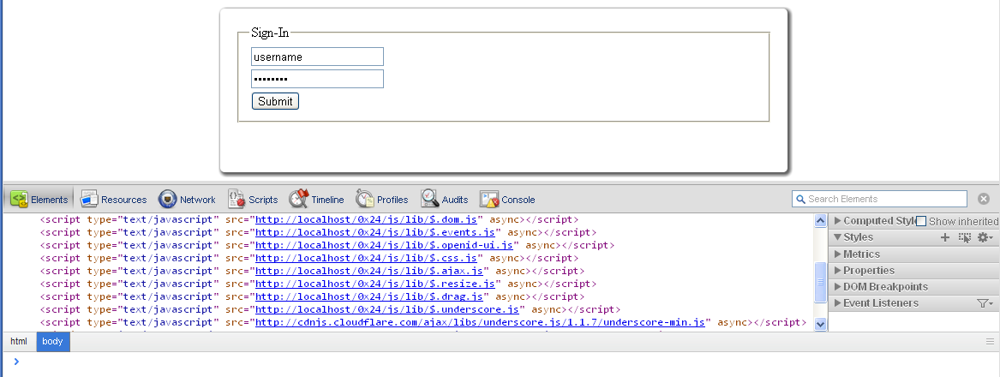

$ [Hex 24]
This shows what should happen. Clicking the buttons above should activate an OpenId module which you can play with until you get bored.

This shows what should happen. Clicking the buttons above should activate an OpenId module which you can play with until you get bored.
